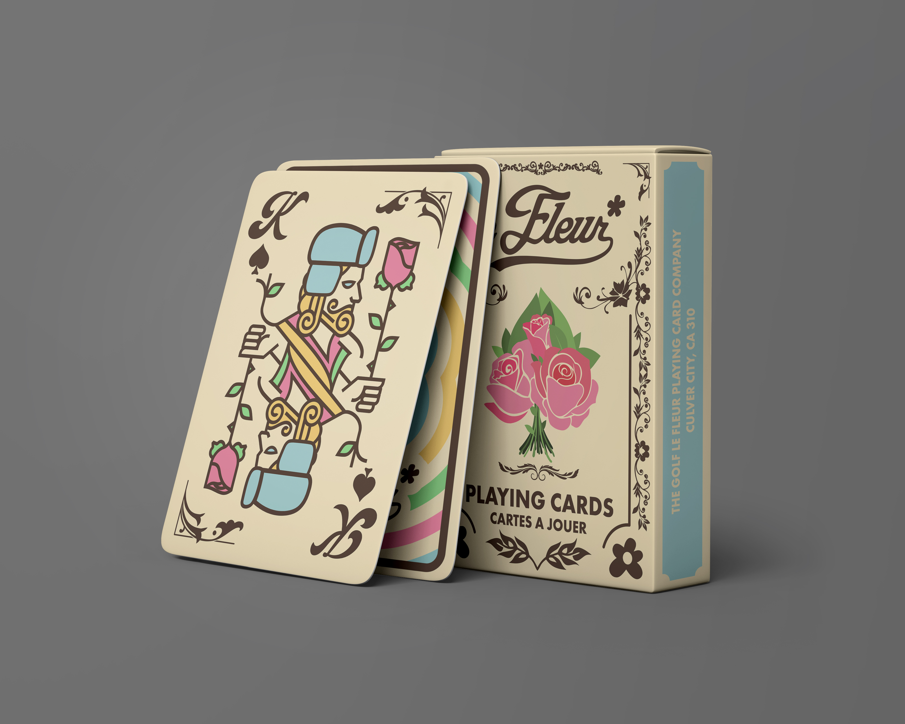
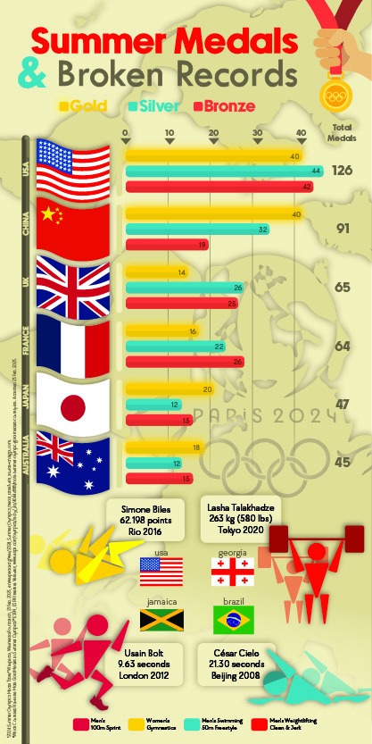
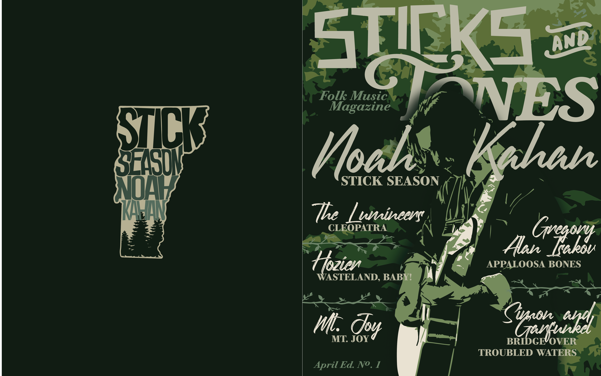

My Work

Bamboo Bear Mock Company Brand Development
For this project from my sophomore year in college, I was tasked to take an animal (a red panda) and develop a company logo, name, letter set, and three branded products. For the final, I assembled all of these elements into this final array of what this brand would offer.

The Institute Custom Book Cover
This was a custom-designed book cover for Stephen King's "The Institute" created for one of my Freshman college art courses.

Eavesdropping
This was an abstract approach to the prompt "eavesdropping" and created an interpretive array of head busts talking and listening and how these words affect them differently.

Limited Edition Golf le Fleur Playing Card Set
This was a design for my Packaging Design course, where I was required to create a limited edition product and box/container. This card set is inspired by the luxury brand Golf le Fleur, which uses unique and original styles, colors, and designs to keep with the company's branding.

Summer Olympics Infographic
In my Information Design course, I was tasked with creating an infographic based on statistics from the 2024 Summer Olympics, which would ideally be used during a NBC Morning Show Broadcast.

Sticks and Tones Mock Magazine Cover
This is a mock magazine cover where I created a handful of pages to showcase different folk music artists and bands, and their associated albums. Using a consistent color pallet, designing the cover, and each element, also choosing the fonts and text arrangements.